01
代码上岗
Codex 和 Agent 类消息说明 AI 正从聊天框往工位钻，接下来要看的不是会不会写，而是谁来管权限和出错。
2 条证据关联
本期从 AIHOT 今日候选中筛出 20 条进入 v4 预览，重点看模型、Agent、开源论文和资本动作如何挤进真实工作。
今天这期不是"又一个模型发布"的流水账，主线更像 AI 开始被塞进真实工位。头条「OpenAI解释如何安全运行」把代码、权限和交付责任摆到桌面上，旁边还有 4 条 Agent、4 条开源论文、3 条商业线索一起催场。Janet 的判断很简单：AI 现在不是缺热闹，是缺能把活干完还不把锅甩给人的证据。
Codex 和 Agent 类消息说明 AI 正从聊天框往工位钻，接下来要看的不是会不会写，而是谁来管权限和出错。
ChatGPT、Claude、语音 API 这类线索都在推高"像人"的体验，但越像人，越要讲清楚边界。
广告、云、创作者工具和商业动作同时出现，说明 AI 已经从讲故事进入算账阶段。
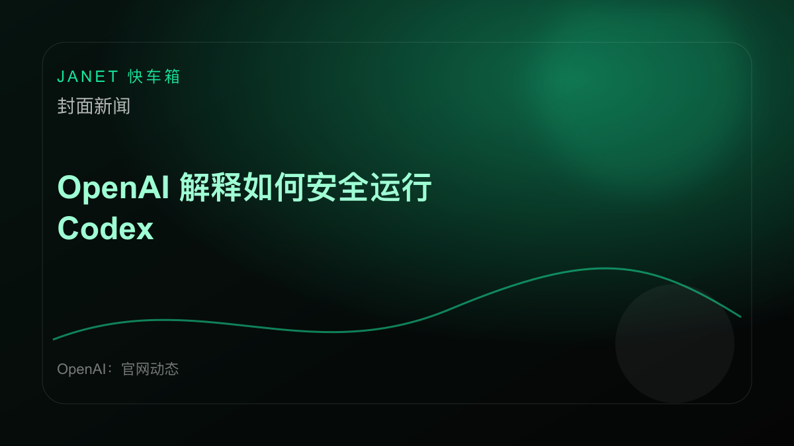
相关主题图 · 本地生成（源站图片暂不可稳定抓取）OpenAI：官网动态：OpenAI通过沙盒隔离、人工审批流程、严格网络策略与原生代理遥测四层防护机制，确保Codex代码生成模型的安全运行。沙盒环境完全隔离执行代码，所有生产请求需经人工审核批准，…
X：宝玉 (@dotey)：X：宝玉 (@dotey)：ChatGPT在中文对话中反复出现"我会稳稳地接住你"等怪异表达，已成为流行梗。WIRED报道指出，这源于"模式坍缩"现象，即后训练反馈机制导…
「ChatGPT中文回」不是小作文问题，而是模型人格化开始影响用户信任和产品边界。
行业线索。ChatGPT中文回 模型开始会哄人时，产品经理开心，用户也要小心。
X：Ethan Mollick (@emollick)：X：Ethan Mollick (@emollick)：Claude的人格化体现--无论是名称（唯一拥有人类名字的AI）、训练方式、Anthr…
「Claude人格化趋」不是小作文问题，而是模型人格化开始影响用户信任和产品边界。
行业线索。Claude人格化趋 模型开始会哄人时，产品经理开心，用户也要小心自己被温柔地带偏。
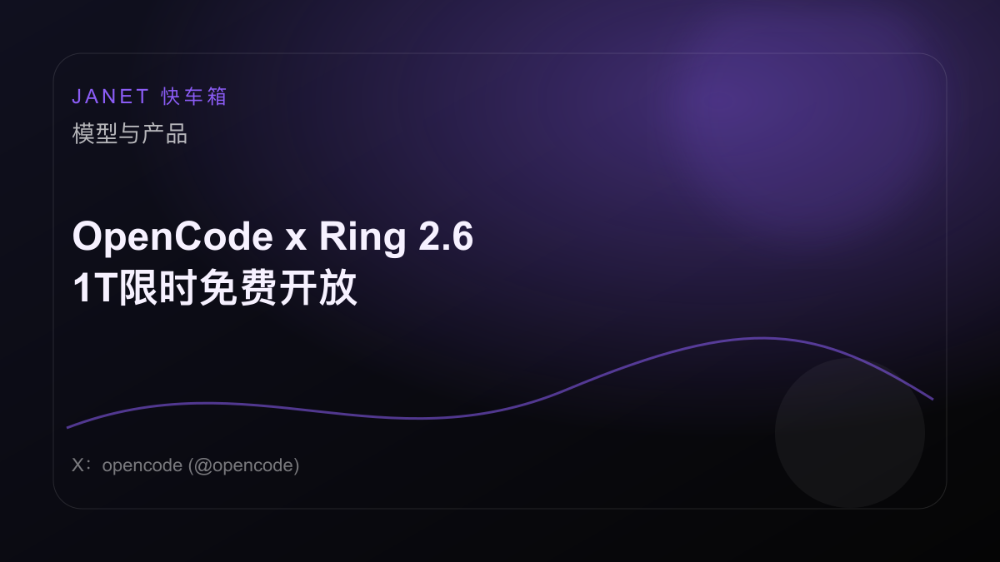
相关主题图 · 本地生成（源站图片暂不可稳定抓取）X：opencode (@opencode)：X：opencode (@opencode)：OpenCode x Ring 2.6 1T - 限时免费开放 256K上下文 • 推理能力 • 纯文本模…
「OpenCodexR」把 AI 从聊天窗口推向代码现场，真正考验会变成权限、安全和交付责任。
行业线索。OpenCodexR 看起来能干活，但权限边界和安全审计还没跟上。
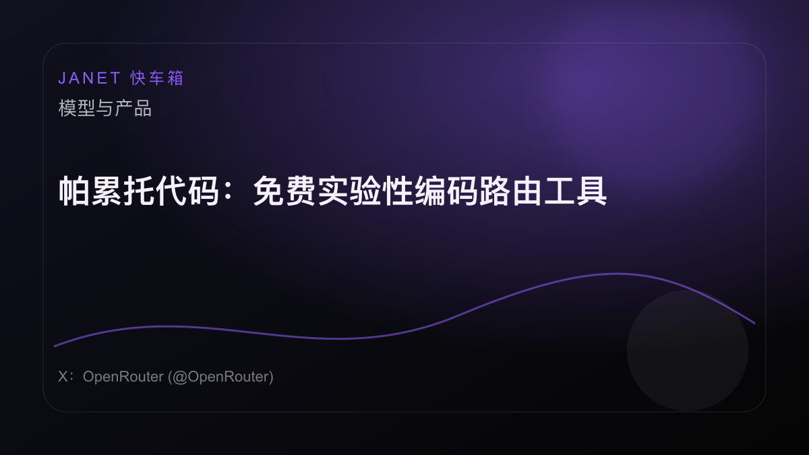
相关主题图 · 本地生成（源站图片暂不可稳定抓取）X：OpenRouter (@OpenRouter)：X：OpenRouter (@OpenRouter)：推出帕累托代码：一款全新、免费、实验性的编码路由工具 在请求中设置 `min_coding…
「帕累托代码：免费实验」把 AI 从聊天窗口推向代码现场，真正考验会变成权限、安全和交付责任。
行业线索。帕累托代码：免费实验 把 AI 推向代码现场，权限、安全、交付责任一起到。
HuggingFace Daily Papers（社区热门论文）：AI协数学家是一个供数学家利用AI智能体进行开放式研究的工作平台。它针对数学工作流程的探索性与迭代性特点，提供从构思、文献检索、计算…
「AI协数学家：以智能」说明 Agent 正在从演示走向流程，脏数据和异常处理会决定它是不是能上桌。
一手源。AI协数学家：以智能 真正考验不是能不能干活，是干砸了谁来兜底。
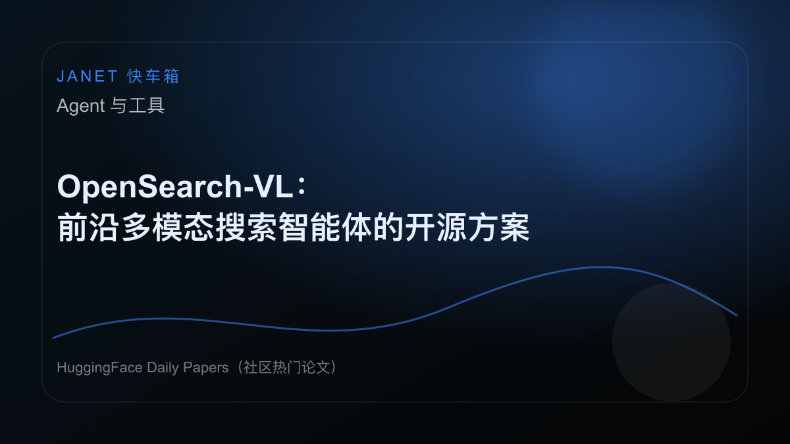
相关主题图 · 本地生成（源站图片暂不可稳定抓取）HuggingFace Daily Papers（社区热门论文）：研究团队推出完全开源的OpenSearch-VL方案，用于训练前沿多模态深度搜索智能体。该方案包含三大核心：通过维基百科路径采样、模…
「OpenSearch」说明 Agent 正在从演示走向流程，脏数据和异常处理会决定它是不是能上桌。
一手源。OpenSearch 别急着叫它同事，先让它把失败现场处理明白。
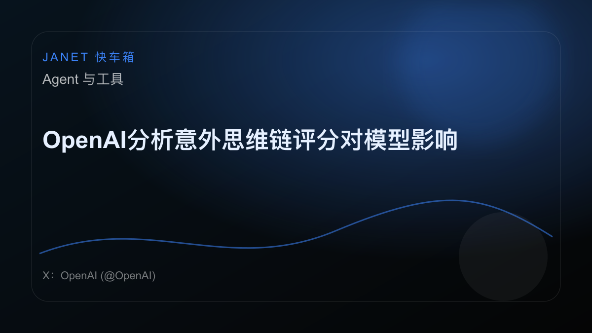
相关主题图 · 本地生成（源站图片暂不可稳定抓取）X：OpenAI (@OpenAI)：X：OpenAI (@OpenAI)：思维链监控器是防御AI智能体错位的关键层。为保持可监控性，我们在RL期间避免惩罚错位推理。 我们发现少量意外思维链评分影响…
「OpenAI分析意外」说明 Agent 正在从演示走向流程，脏数据和异常处理会决定它是不是能上桌。
行业线索。OpenAI分析意外 先让它把失败现场处理明白，不然只是更贵的自动填表。
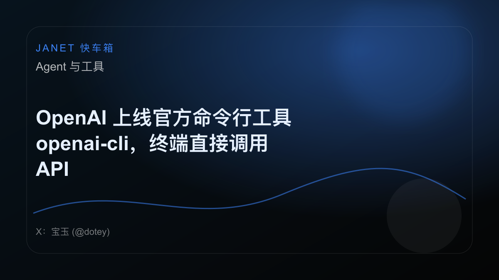
相关主题图 · 本地生成（源站图片暂不可稳定抓取）X：宝玉 (@dotey)：X：宝玉 (@dotey)：OpenAI 在 GitHub 开源了官方命令行工具 openai-cli，采用 Apache 2.0 协议，支持通过 Homebrew 或 …
「OpenAI上线官方」把 AI 从聊天窗口推向代码现场，真正考验会变成权限、安全和交付责任。
行业线索。OpenAI上线官方 把 AI 推向代码现场，权限、安全、交付责任一起到。
OpenAI：官网动态：OpenAI扩展了网络安全领域的可信访问计划，推出了GPT-5.5和专门针对网络安全的GPT-5.5-Cyber模型。此举旨在帮助经过验证的网络安全防御者加速漏洞研究，并加强…
「ScalingTru」把 AI 风险拉回安全现场，能力越强，权限和防线越不能靠祈祷。
一手源。ScalingTru AI 安全不是贴个警告牌，越能干的模型越需要笼子和钥匙分开管。
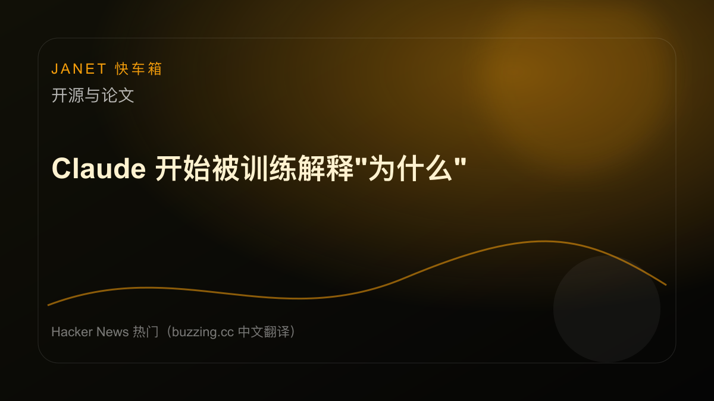
相关主题图 · 本地生成（源站图片暂不可稳定抓取）Hacker News 热门（buzzing.cc 中文翻译）：Anthropic公司发布了Claude模型的新研究"Teaching Claude Why"。该研究通过让模型学习解释自身推理过程中…
「Claude开始被训」不是小作文问题，而是模型人格化开始影响用户信任和产品边界。
一手源。Claude开始被训 模型开始会哄人时，产品经理开心，用户也要小心。
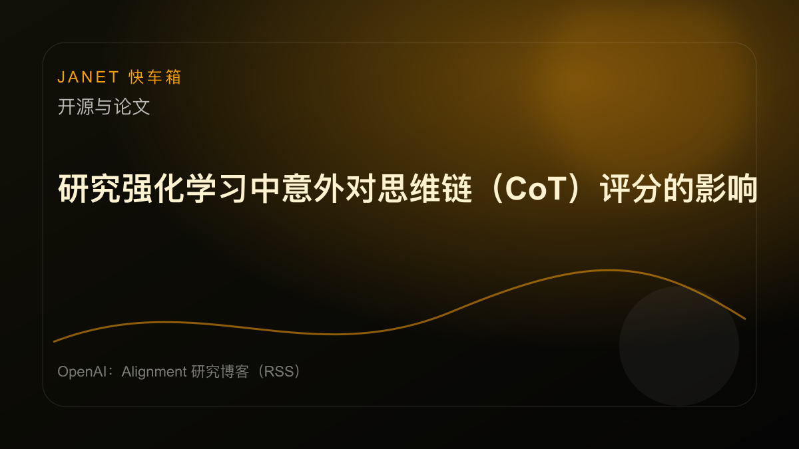
相关主题图 · 本地生成（源站图片暂不可稳定抓取）OpenAI：Alignment 研究博客（RSS）：研究发现，部分已发布的模型存在有限的意外对思维链（CoT）进行评分的情况。团队已修复受影响的奖励通路，并确认没有明确证据表明模型的可监控性因此下…
「研究强化学习中意外对」提供方法线索，但论文热闹不等于生产可用，复现实验才是第一关。
一手源。研究强化学习中意外对 提供方法线索，但论文热闹不等于生产可用，复现实验才是第一关。
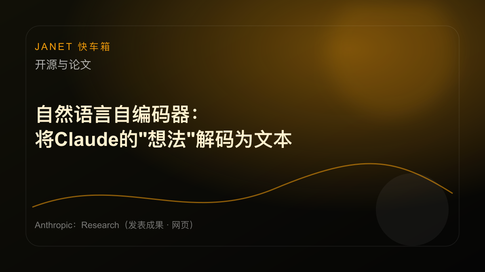
相关主题图 · 本地生成（源站图片暂不可稳定抓取）Anthropic：Research（发表成果 · 网页）：Anthropic团队推出自然语言自编码器方法，能将大模型内部的激活值直接解码为可读文本。该方法通过训练"激活描述器"和"激活重建器"，形…
「自然语言自编码器：将」不是小作文问题，而是模型人格化开始影响用户信任和产品边界。
一手源。自然语言自编码器：将 模型开始会哄人时，产品经理开心，用户也要小心。
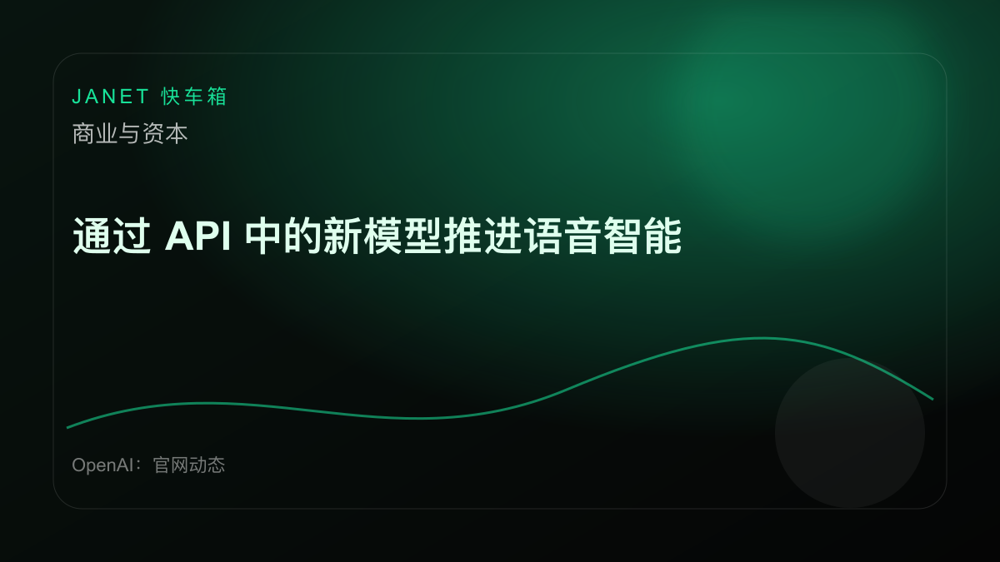
相关主题图 · 本地生成（源站图片暂不可稳定抓取）OpenAI：官网动态：OpenAI API 推出了新的实时语音模型，能够进行推理、翻译和语音转录。这些模型显著提升了语音交互的自然度与智能水平，支持实时处理与多语言转换。新功能旨在为开发者提供更强…
「通过API中的新模型」把 AI 从聊天窗口推向代码现场，真正考验会变成权限、安全和交付责任。
一手源。通过API中的新模型 如果真能进工位，最先失眠的不是程序员，是权限管理员。
OpenAI：官网动态：OpenAI开始在ChatGPT中测试广告功能，旨在支持其免费服务的持续运营。测试强调广告会带有明确标识，且广告内容不会影响ChatGPT的回答独立性。该举措配套严格的隐私保…
「在ChatGPT中测」不是小作文问题，而是模型人格化开始影响用户信任和产品边界。
一手源。在ChatGPT中测 模型开始会哄人时，产品经理开心，用户也要小心自己被温柔地带偏。
OpenAI：官网动态：Uber 宣布在其全球实时交通服务平台中集成 OpenAI 技术，用于驱动 AI 助手与语音功能。新功能旨在帮助司机更智能地规划接单以提升收入，同时让乘客能够更快完成叫车流程…
「Uber利用Open」把入口从文字推到语音，延迟、价格和稳定性会直接影响使用频率。
一手源。Uber利用Open 语音入口听起来性感，但只要延迟一高，它就会从助手变成电话客服。
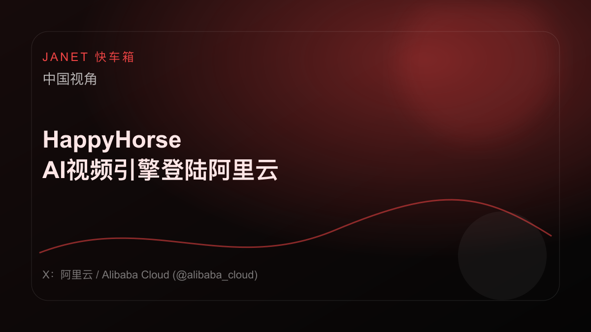
相关主题图 · 本地生成（源站图片暂不可稳定抓取）X：阿里云 / Alibaba Cloud (@alibaba_cloud)：X：阿里云 / Alibaba Cloud (@alibaba_cloud)：资产审核：通过。物理逻辑：无缝衔接。🐎 …
「HappyHorse」说明本土 AI 仍在抢落地窗口，云、渠道和场景会比参数表更现实。
一手源。HappyHorse 国产 AI 的重点不是喊追上谁，而是谁先在真实客户那里少翻车。
X：Jim Fan (@DrJimFan)：X：Jim Fan (@DrJimFan)：演讲者以"Robotics： Endgame"为题，提出解决物理AGI的路线图，直接类比LLM的成功路径。核心…
「机器人终局：物理AG」把 AI 从屏幕拖到现实世界，硬件、成本和安全都会一起找上门。
行业线索。机器人终局：物理AG 机器人路线图听着很燃，现实会先拿电池、成本和摔倒来泼冷水。
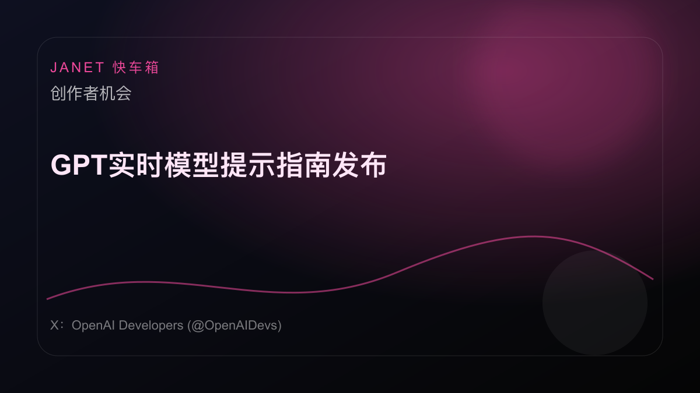
相关主题图 · 本地生成（源站图片暂不可稳定抓取）X：OpenAI Developers (@OpenAIDevs)：X：OpenAI Developers (@OpenAIDevs)：正在用GPT-Realtime-2构建语音应用？ 我们的新提示…
「GPT实时模型提示指」把 AI 从聊天窗口推向代码现场，真正考验会变成权限、安全和交付责任。
行业线索。GPT实时模型提示指 看起来能干活，但权限边界和安全审计还没跟上。
X：阿易 AI Notes (@AYi_AInotes)：X：阿易 AI Notes (@AYi_AInotes)：AI工具GPT Images 2和Gemini 3.1 Pro的出现，彻底颠覆了教…
「教育科技门槛一夜归零」把 AI 从聊天窗口推向代码现场，真正考验会变成权限、安全和交付责任。
行业线索。教育科技门槛一夜归零 如果真能进工位，最先失眠的不是程序员，是权限管理员。
本期正文来自 AIHOT fresh snapshot 里的 20 条入选新闻，来源账本 20 条；其中 S 级 11 条、A 级 0 条、B 级 9 条，仍需人工复核排序。
| News ID | Source | Rank | Type | Include |
|---|---|---|---|---|
| openai-codex | OpenAI：官网动态 | S | official | Yes |
| chatgpt-wired | X：宝玉 (@dotey) | B | social | Yes |
| claude-2 | X：Ethan Mollick (@emollick) | B | social | Yes |
| opencode-x-ring-2-6-1t | X：opencode (@opencode) | B | social | Yes |
| item-2 | X：OpenRouter (@OpenRouter) | B | social | Yes |
| ai-ai | HuggingFace Daily Papers（社区热门论文） | S | official | Yes |
| opensearch-vl | HuggingFace Daily Papers（社区热门论文） | S | official | Yes |
| openai | X：OpenAI (@OpenAI) | B | social | Yes |
| openai-openai-cli-api | X：宝玉 (@dotey) | B | social | Yes |
| scaling-trusted-access-for-cyber-with-gpt-5-5-and-gpt-5-5-cyber | OpenAI：官网动态 | S | official | Yes |
| item | Hacker News 热门（buzzing.cc 中文翻译） | S | official | Yes |
| cot | OpenAI：Alignment 研究博客（RSS） | S | official | Yes |
| claude | Anthropic：Research（发表成果 · 网页） | S | official | Yes |
| api | OpenAI：官网动态 | S | official | Yes |
| chatgpt | OpenAI：官网动态 | S | official | Yes |
| uber-openai | OpenAI：官网动态 | S | official | Yes |
| happyhorse-ai | X：阿里云 / Alibaba Cloud (@alibaba_cloud) | S | social | Yes |
| agi-llm | X：Jim Fan (@DrJimFan) | B | social | Yes |
| gpt | X：OpenAI Developers (@OpenAIDevs) | B | social | Yes |
| ai-3d | X：阿易 AI Notes (@AYi_AInotes) | B | social | Yes |
这里不是任务清单，而是接下来几天值得继续盯住的变量。